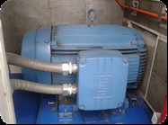
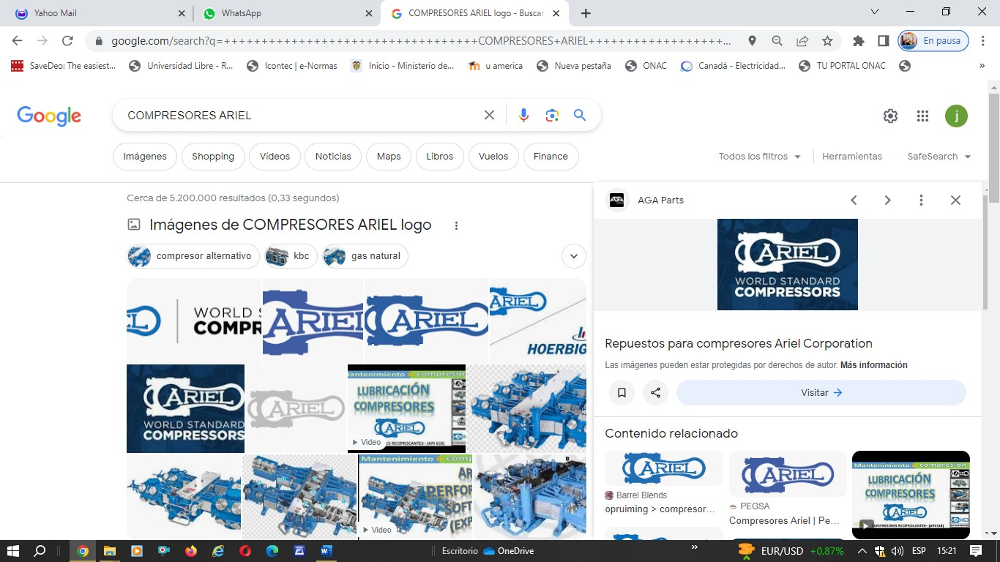
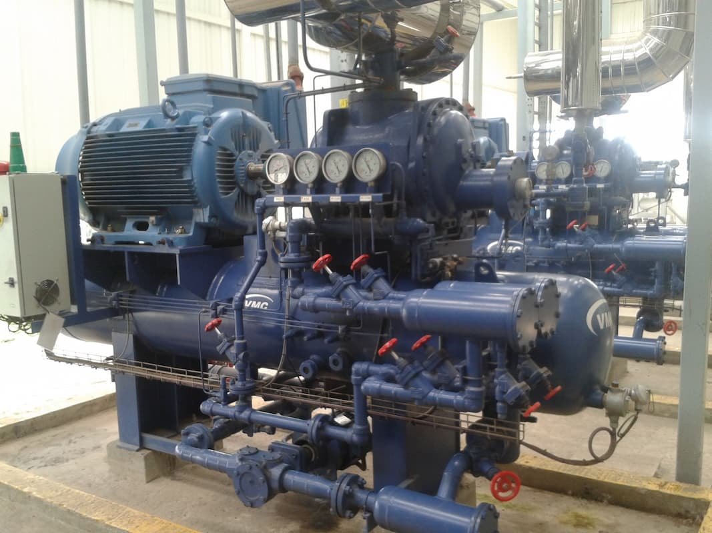
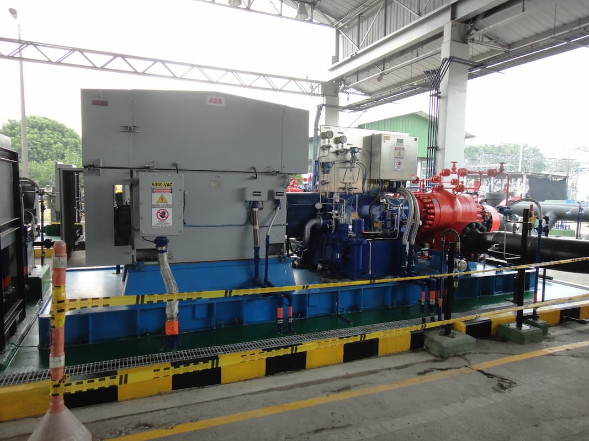
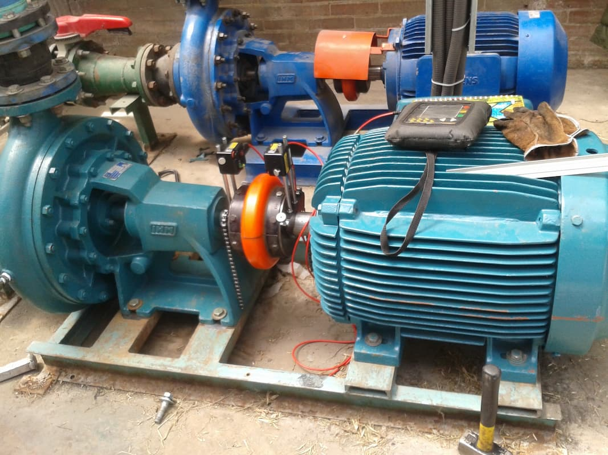

Diagnóstico avanzado para equipos rotatorios críticos en el sector industrial.







El análisis de vibraciones permite determinar, mediante mediciones periódicas, el estado de desgaste de los elementos rodantes, previniendo paros no programados y evitando pérdidas económicas por fallas en sistemas industriales.
El balanceo dinámico es una práctica técnica normalizada orientada a reducir la carga en cojinetes y disminuir el ruido de funcionamiento de equipos rotatorios, mejorando su confiabilidad y prolongando su vida útil.
S&S Supplier and Services es una empresa con base en Bogotá, Colombia, especializada en mantenimiento predictivo y análisis vibracional industrial para sectores de energía, petróleo, manufactura y procesos industriales.
Bogotá, Colombia
WhatsApp: +57 XXX XXX XXXX